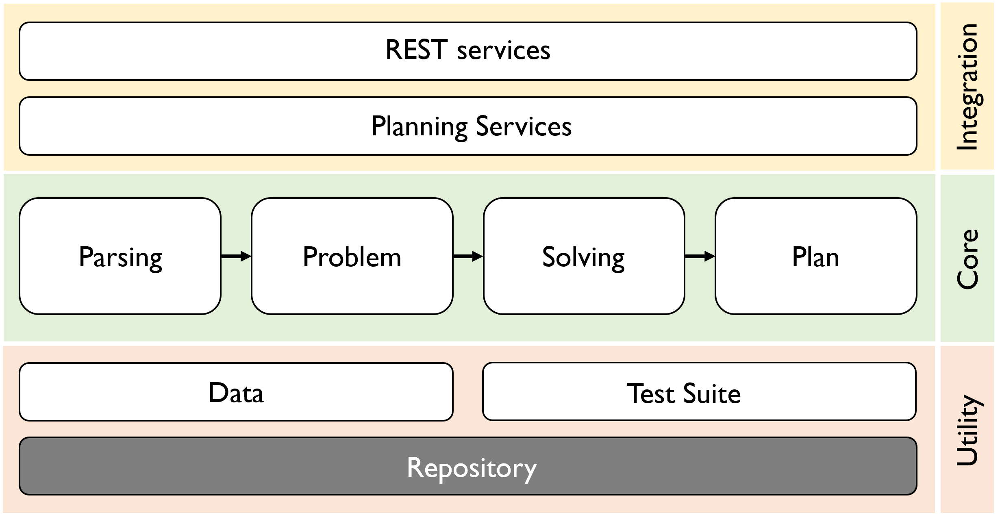

SH Planning System
SH Planning System
SH is a software system designed to solve complex planning problems in various domains. It is based on state-based Hierarchical Task Network (HTN) planning and relies on a version of the Hierarchical Planning Definition Language (HDPL) for specifying planning problems. What sets SH apart is its modular and service-oriented architecture, providing flexibility, extensibility, and maintainability. The SH planning system offers versatile capabilities, including modular parsing of planning problems, quick variable binding and predicate grounding on the fly during plan generation, resource-efficient plan generation, and seamless integration into other larger systems. These capabilities make SH suitable for addressing real-world challenges in planning, automation, assistance, and decision-making.
System Architecture

SH's architecture is layered and composed of nine modules. The bottom layer consists of the Repository, Data, and Test Suite modules, enabling reading, storing, and configuring planning data and testing the core planning functionalities. The Core layer comprises Parsing, Problem, Solving, and Plan modules. The Parsing module enables parsing planning problems, while the Problem module handles an HTN planning problem's representation at the programming level. The Solving module encompasses the functionalities for plan generation, space search, and grounding. The Plan module includes the programming construct representing the solution to a planning problem. The top layer features the Planning Services and REST Services modules, offering functionalities for system utilisation and integration. The subsequent section details the key functionalities and capabilities of the modules at the Core and Integration layers.
Capabilities
- Supports specifying HTN planning problems using the Hierarchical Planning Definition Language (HPDL).
- Parses HPDL files into Scala case classes using modular, composable parser combinators that enable pattern matching against parsed results.
- Supports reasoning over rich expressiveness features in domains, including logical connectives, quantification, numeric constraints, axioms, recursion, dynamic objects, and parameter typing.
- Generates plans by combining ordered task decomposition, depth-first search, and on-the-fly grounding to efficiently handle diverse domains and scenarios.
- Performs grounding dynamically during planning using a lifted representation and a predicate-property map, minimizing binding checks while leveraging interned Scala Symbols to ensure consistent variable references across HTN constructs.
- Offers flexible integration through 8 modular planning services that can be deployed standalone as a .jar, embedded in larger systems, or exposed as asynchronous REST Web services via Akka HTTP.
Impact
SH's design philosophy has advanced methodological aspects of AI planning: contributing a standard-based syntax for specifying HTN planning problems (well before HDDL), incorporating numeric HTN planning, pioneering the idea of AI planning as a service, and laying the groundwork for planning system engineering principles aligned with the emerging AI engineering field. Its expressiveness has enabled domains that surpass the capabilities of state-of-the-art HTN planners.
Applications
SH has driven innovation across several real-world domains, including smart offices, smart open spaces within buildings, and cloud application deployment. A notable deployment regulated lighting in the Bernoulliborg building's restaurant at the University of Groningen over two years, reducing energy consumption, cutting operational costs, and improving user satisfaction with building automation. SH has been at the core of the Energy Smart Offices and BIGS projects (funded by the Dutch Research Council), the GreenerBuildings project (funded by the European Union's Seventh Framework Program), and a Green Mind Award initiative at the University of Groningen. Ongoing efforts focus on integrating SH into a living lab at the University of Stuttgart.
Community
SH is part of the PlanX Universe, a collection of resources for engineering AI planning systems, and comes with a repository of domains and a suite of unit tests that allow researchers and practitioners to evaluate HTN planners and validate internal mechanisms. It plays an active role in teaching and research at the University of Stuttgart, where multiple students use SH in their projects and contribute to enriching its capabilities.
Relevant Literature:
- Georgievski, I. Coordinating services embedded everywhere via hierarchical planning. Ph.D. Thesis, University of Groningen, October 2015.
- Georgievski, I. and Aiello, M. HTN planning: Overview, comparison, and beyond. Artificial Intelligence, 222(0): 124-156. 2015.
- Georgievski, I., Nguyen, T. A., Nizamic, F., Setz, B., Lazovik, A., and Aiello, M. Planning meets activity recognition: Service coordination for intelligent buildings. Pervasive and Mobile Computing, 38(1): 110-139. 2017.
- Georgievski, I., Nizamic, F., Lazovik, A., and Aiello, M. Cloud Ready Applications Composed via HTN Planning. In IEEE International Conference on Service Oriented Computing and Applications, pages 23-33, 2017.
- Georgievski, I. HTN Planning Domain for Deployment of Cloud Applications. In 10th International Planning Competition: Planner and Domain Abstracts, pages 34-46, 2021.
- Georgievski, I.; and Breitenbücher, U. A Vision for Composing, Integrating, and Deploying AI Planning Functionalities. In IEEE International Conference on Service-Oriented System Engineering, pages 166-171, 2021.
- Georgievski, I. Towards Engineering AI Planning Functionalities as Services. In Service-Oriented Computing - ICSOC 2022 Workshops, of Lecture Notes in Computer Science, pages 225-236, 2022. Springer International Publishing.
- Georgievski, I. Engineering AI Planning Systems. Habilitation Thesis, University of Stuttgart, June 2025.
BibTeX
@article{georgievski2024sh,
title={SH: Service-oriented HTN Planning system for real-world domains},
author={Georgievski, Ilche and Palghadmal, A. V. and Alnazer, E. and Aiello, Marco},
journal={SoftwareX},
volume={27},
pages={101779},
year={2024}
}